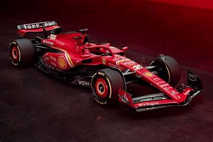

Ferrari F1 Saison 2024
Accueil
Les Pilotes
La Voiture
Les Victoires
Donations
Voici une brève présentation de la SF-24 (voiture de la Scuderia Ferrari pour la saison 2024) :
Moteur V6
1600cc
15000 tours par minutes maximum
Système hybride de récupération d'énergie
Poids total (pilote compris)= 798kg
